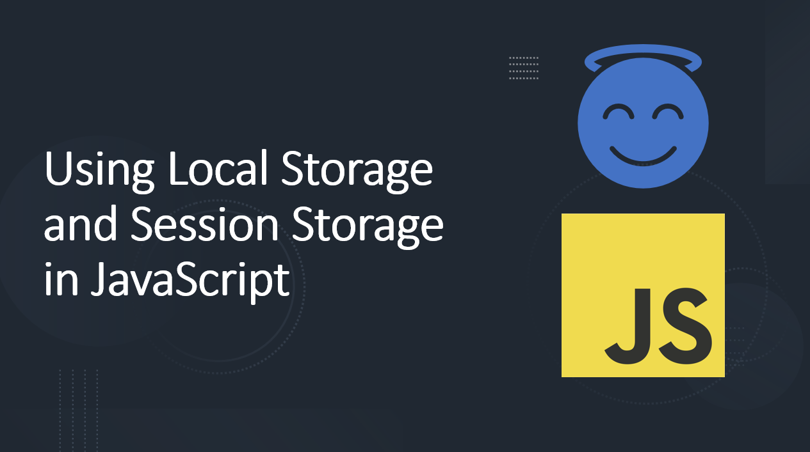

Introduction​
Local Storage and Session Storage are two web storage mechanisms provided by modern browsers to store data on the client-side. They offer a simple and efficient way to save key-value pairs in the user's browser.
In this blog post we will learn how to use Local Storage and Session Storage in JavaScript. We will also learn about the differences between the two storage mechanisms and when to use them.
Suggested Tutorials 📑:​
Let's get started.
1. What is Local Storage?​
Local Storage is a web storage mechanism that allows you to store data in the user's browser. It is a simple key-value store that can be used to save data on the client-side.
Local Storage is persistent, which means that the data stored in it will be available even after the browser is closed. It is also secure, which means that the data stored in it cannot be accessed by other websites.
1.1 How to use Local Storage?​
Local Storage is a global object that is available in the browser. It has a setItem() method that can be used to store data in the browser. The data is stored as a key-value pair.
As an example:
localStorage.setItem('name', 'John Doe');
In this example:
- The
setItem() method is used to store the value John Doe in the key name in the Local Storage. - The
setItem() method takes two arguments: the key and the value.
1.2 How to get data from Local Storage?​
Local Storage has a getItem() method that can be used to get data from the browser. The data is retrieved as a string.
As an example:
const name = localStorage.getItem('name');
In this example:
- The
getItem() method is used to get the value stored in the key name in the Local Storage.
1.3 How to remove data from Local Storage?​
Local Storage has a removeItem() method that can be used to remove data from the browser.
As an example:
localStorage.removeItem('name');
In this example:
- The
removeItem() method is used to remove the value stored in the key name in the Local Storage.
1.4 How to clear Local Storage?​
Local Storage has a clear() method that can be used to clear all the data stored in the browser.
As an example:
In this example:
- The
clear() method is used to clear all the data stored in the Local Storage.
Suggested Tutorials 📑:​
2. What is Session Storage?​
Session Storage is a web storage mechanism that allows you to store data in the user's browser. It is a simple key-value store that can be used to save data on the client-side.
Session Storage is not persistent, which means that the data stored in it will be lost when the browser is closed. It is also secure, which means that the data stored in it cannot be accessed by other websites.
2.1 How to use Session Storage?​
Session Storage is a global object that is available in the browser. It has a setItem() method that can be used to store data in the browser. The data is stored as a key-value pair.
As an example:
sessionStorage.setItem('name', 'John Doe');
In this example:
- The
setItem() method is used to store the value John Doe in the key name in the Session Storage. - The
setItem() method takes two arguments: the key and the value.
2.2 How to get data from Session Storage?​
Session Storage has a getItem() method that can be used to get data from the browser. The data is retrieved as a string.
As an example:
const name = sessionStorage.getItem('name');
In this example:
- The
getItem() method is used to get the value stored in the key name in the Session Storage.
2.3 How to remove data from Session Storage?​
Session Storage has a removeItem() method that can be used to remove data from the browser.
As an example:
sessionStorage.removeItem('name');
In this example:
- The
removeItem() method is used to remove the value stored in the key name in the Session Storage.
2.4 How to clear Session Storage?​
Session Storage has a clear() method that can be used to clear all the data stored in the browser.
As an example:
In this example:
- The
clear() method is used to clear all the data stored in the Session Storage.
Suggested Tutorials 📑:​
Conclusion​
In this blog post we learned how to use Local Storage and Session Storage in JavaScript. We also learned about the differences between the two storage mechanisms and when to use them.
I hope you found this blog post useful.
Happy Coding! 😇